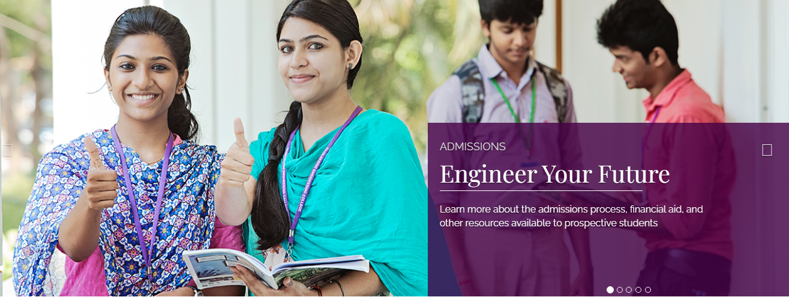

Home
Welcome to Rajalakshmi Engineering College...
About
Rajalakshmi Engineering College, an autonomous institution affiliated to Anna University, Chennai, was established in the year 1997 under the aegis of Rajalakshmi Educational Trust whose members have had consummate experience in the fields of education and industry. The College has grown from strength to strength in the last 25 years and progressing towards Excellence in Engineering Education, Research and Development. Started with 3 Under Graduate programmes in Engineering with an annual intake of 180 students in 1997, the College presently offers 18 Under Graduate and 9 Post Graduate programmes including MBA program, with an annual intake of 2070 students. The approval of AICTE and affiliation of the Anna University for such a progressive intake is a standing testimony for the continuous growth of the college over the years. 9 of our departments are recognized as Research Centers of Anna University to conduct Ph.D. and M.S. (By Research) programmes and many scholars have obtained Ph.D. through these research centres. Ours is one among the few Colleges to receive accreditation for Under Graduate Engineering programmes from the National Board of Accreditation (NBA), New Delhi, as soon as attaining the eligibility to apply for accreditation. The College is accredited by the National Assessment and Accreditation Council (NAAC) with 'A++' Grade. The college has also secured 12(b) status from UGC. Anna University, Chennai has granted Permanent Affiliation for 10 UG courses viz. Aeronautical Engineering, Automobile Engineering, Biomedical Engineering, Biotechnology, Civil Engineering, Computer Science and Engineering, Electronics and Communication Engineering, Electrical and Electronics Engineering, Mechanical Engineering, Information Technology and 4 PG Courses viz. M.Tech - Biotechnology, M.E. Computer Science and Engineering, M.E. Communication Systems and Master of Business Administration. The Department of Scientific and Industrial Research (DSIR), Government of India has recognized the College as a Scientific and Industrial Research Organization (SIRO), considering its potential for Research and Development activities.
Departments
Department of Computer Science and Engineering
Since its inception in 1997, the Department of Computer Science and Engineering has been continuously making progress in teaching and R & D activities. Initially commencing with an intake of 60 students, the sanctioned intake was increased to 90 seats in 2001 and to 120 seats in 2005 and to 300 seats in 2015. The Post Graduate programme viz. M.E. - Computer Science and Engineering was introduced in the year 2004-05 and in 2006 the Department was recognized as Collaborative Research Centre by Anna University to offer M.S. (by research) and Ph.D. programmes. The Department has been maintaining an active interaction with the industries particularly with the Computer Society of India. The IT major Tata Consultancy Services has accredited the college for faculty and students development programmes, campus interview etc.
The Department has entered into an MoU with IBM, Infosys, TCS, Zoho, Virtusa, Pega, Oracle, Wipro, VMWare, UiPath, Dell, Cognizant, AWS, U.S. Technologies and many other renowned software companies for software training and Faculty Development Programmes, besides R&D activities.
The students from the Department have brought laurels by winning AICTE Smart India Hackathon three times. CII Connect awards have been presented by honourable Chief Minister of Tamilnadu to the students. The students have participated in several Hackathons and competitions and won accolades for the Department and college. Many of the students are well placed in leading software companies such as TCS, Infosys, Zoho, IBM, etc., There are quite a number of students who have taken up the ladder of Entrepreneurship.
Vision
To promote highly ethical and innovative computer professionals through excellence in teaching, training and research.
Mission
To produce globally competent professionals, motivated to learn the emerging technologies and to be innovative in solving real world problems.
To promote research activities amongst the students and the members of faculty that could benefit the society.
To impart moral and ethical values in their profession.
Admissions
Programmes Offered and Approved Intake
Under Graduate
- B.E. Aeronautical Engineering
- B.E. Automobile Engineering
- B.E. BioMedical Engineering
- B.E. Civil Engineering
- B.E. Computer Science & Design
- B.E. Computer Science & Engineering
- B.E. Computer Science & Engineering (Cyber Security)
- B.E. Electrical & Electronics Engineering
- B.E. Electronics & Communication Engineering
- B.E. Mechanical Engineering
- B.E. Mechatronics Engineering
- B.E. Robotics and Automation
- B.Tech. Artificial Intelligence & Data Science
- B.Tech. Artificial Intelligence & Machine Learning
- B.Tech. Bio Technology
- B.Tech. Chemical Engineering
- B.Tech. Computer Science and Business Systems
- B.Tech. Food Technology
- B.Tech. Information Technology
Post Graduate
- M.E. Avionics
- M.E. Communication Systems
- M.E. Engineering Design
- M.E. Embedded System Technologies
- M.E. Medical Electronics
- M.E. Computer Science & Engineering
- M.Tech. Bio-Technology
- M.Tech. Data Science
- M.B.A. Master of Business Administration (2 years)
Ph.D.
- Biotechnology
- Biomedical Engineering
- Chemistry
- Computer Science and Engineering
- Electronics and Communication Engineering
- Electrical and Electronics Engineering
- Mathematics
- Mechanical Engineering
Contact Information
Administrative Office
# 69 New Avadi Road,Kilpauk, Chennai - 600 010.
Phone: +91-44-26442472, +91-44-26461316, +91-44-26460124
Fax: +91-44-26445151
E-mail: cityoffice@rajalakshmi.edu.in
Website: www.rajalakshmi.org
College
# Rajalakshmi NagarThandalam, Chennai - 602 105.
Phone: +91-44-67181111, +91-44-67181112
E-mail: admin@rajalakshmi.edu.in
Website: www.rajalakshmi.org
Important Contact Numbers
- Admissions: +91-44-26442472, +91-44-26461316, +91-44-26460124, +91-44-67181111, +91-44-67181112
- Helpdesk: +91-9025671066, +91-9052671077
- Principal: +91-44-67181001
- HR: +91-44-67181020
- Training: +91-9381981015
Departments
- Aeronautical: hod.aero@rajalakshmi.edu.in
- AIML: hod.aiml@rajalakshmi.edu.in
- Automobile: hod.auto@rajalakshmi.edu.in
- Biomedical: hod.bme@rajalakshmi.edu.in
- Biotech: hod.bt@rajalakshmi.edu.in
- Chemical: hod.chem@rajalakshmi.edu.in
- Civil: hod.civil@rajalakshmi.edu.in
- CSE: hod.cse@rajalakshmi.edu.in
- EEE: hod.eee@rajalakshmi.edu.in
- ECE: hod.ece@rajalakshmi.edu.in
- IT: hod.it@rajalakshmi.edu.in
- Maths: hod.maths@rajalakshmi.edu.in
- MBA: hod.mba@rajalakshmi.edu.in
- Mechanical: hod.mech@rajalakshmi.edu.in
- Placement: placement@rajalakshmi.edu.in